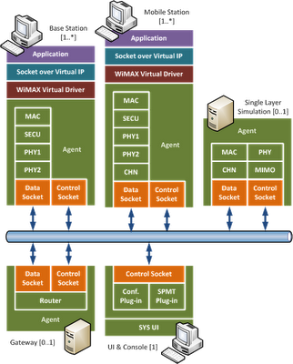
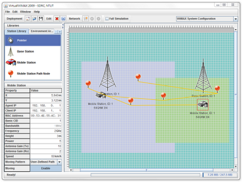
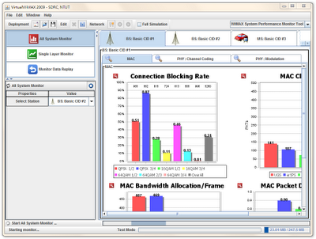

WiMAX 無線通訊系統軟體與工具開發

※ 什麼是 WiMAX
WiMAX 的英文全名為W orldwide Interoperability for Microwave Access，中文翻譯為「全球互通微波存取」，是以 IEEE 802.16 系列標準為基礎的一種點對多點寬頻無線存取技術， 2001 年 6 月由 WiMAX Forum 提出並開始推動。 WiMAX 傳輸速度最高可達 70Mbps，是一般 ADSL 用戶頻寬的十多倍，而傳輸範圍最遠可達 50 公里，相較於 Wi-Fi，它的訊號涵蓋範圍更廣、傳遞速度更快，而且提供服務品質保障 (QoS) 與多重安全機制，讓網路傳輸的品質更加穩定安全，也被稱為第四世代 (4G) 無線行動寬頻技術。
WiMAX 被視為是可以將目前的最後一哩有線網路（例如 ADSL）無線化的接取技術，其應用領域非常廣泛，包括：最後一哩網路建置、偏遠地區寬頻上網、住宅與企業網路的網路行動化及多媒體通訊等運用。
※ 研究緣起
WiMAX 技術暨應用是目前政府加速實現「行動台灣計畫」 (M-Taiwan)的重點工作項目，目標是讓台取得在 WiMAX 產業發展上的全球領先優勢，帶動兆元通訊產業的發展，預估台灣 WiMAX 產業將可突破 1 億美元產值，因此，其未來發展，從政府到業界皆有高度的期待。
有鑒於業界對於 WiMAX 技術殷切的需求，2006 年臺北科技大學成立軟體發展研究中心，並由中心主任陳偉凱教授帶領國科會嵌入式系統暨自由軟體專案下的 「WiMAX 無線通訊系統軟體與工具開發」整合型計畫(以下簡稱此計畫)，此計畫以自由軟體的方式，依據 WiMAX 的規格，實作出一套模擬 WiMAX 網路環境所需的軟體，範圍涵蓋應用層、媒體層、實體層及通道層，以便完整的模擬應用軟體於 WiMAX 無線網路環境的實際運作情形，作為業界開發 WiMAX 相關軟硬體的參考模型。
※ 系統架構
此計畫所選擇的系統架構是分散式代理人 (Distributed Agent) 架構。圖一是系統架構圖，由圖中可以看出，各行動台 (Mobile Station)、基地台 (Base Station)、閘道器 (Gateway)、主控台 (Console) 分別各自使用一部電腦負責模擬或執行，透過實體網路（圖中藍色部分）連結成一套完整的 WiMAX 模擬系統，因此模擬時，運算是分散到不同的電腦上執行的。另外，為提高模擬的便利性，除了主控台，我們在每一部電腦上都部署一支代理人 (Agent) 程式（圖中綠色標示 Agent 的部份）與 WiMAX 虛擬網路卡驅動程式，由主控台指揮代理人，依模擬的需求扮演行動台、基地台、閘道器等角色，以便進行模擬。

圖一 WiMAX Simulator System Architecture
當使用者想要模擬 WiMAX 網路時，首先透過主控台的使用者介面（圖二），設定欲模擬的網路環境，包含地形（都市、市郊、山區等）、基地台的特性 (Properties)、數量與距離、行動用戶端的特性、數量、移動速度及與基地台的距離等，然後啟動模擬。啟動時，主控台會先進行初始化的工作，依使用者指定的模擬環境，透過控制埠 (Control Socket) 送出命令，設定代理人應該扮演的角色（行動台、基地台或單層模擬），待初始化完成後，行動台的應用程式便可以使用（虛擬）WiMAX 網路環境。
例如，當某甲行動台的應用程式（例如FTP）與某乙行動台的應用程式（例如FTP server）互通時，某甲的應用程式即透過 Linux 的 Socket API（圖中的Socket over virtual IP）建立連線，使應用程式的封包 (packet) 透過 WiMAX Virtual Driver 送給代理人，此時代理人模擬 WiMAX 行動台，因此，代理人將封包依 WiMAX 的規格，經 MAC、SECU、PHY 等通訊層處理，產生實體的 WiMAX 電波訊號，然後，經過通道效應 (CHN) 模擬訊號於空氣中傳遞所造成的失真，然後透過實體網路 (Data Socket) 傳至基地台，由基地台轉傳送至某乙行動台。換句話說，WiMAX 的各通訊層模擬由代理人負責，而多個代理人同時進行模擬時，則構成分散式的 WiMAX 模擬系統。

圖二 模擬環境設定畫面
分散式代理人的架構將整個模擬系統拆解成幾個子系統。而在個別子系統中，為了解決其他問題，此計畫又搭配使用其他小型的系統架構。例如，為了讓 WiMAX 各層通訊模組能於執行期間動態地被載入、組合與卸除，在代理人程式內部使用「Pipe & Filter」架構，每一層網路模組均為一個 Filter，透過 Filter一致的標準化介面，代理人程式在收到主控台的命令後，就可以用組合積木的方式，選擇若干個 Filter，形成一個處理網路封包的 Pipe，而封包就像水一樣，流經 Pipe中的 Filter，由各個 Filter 對封包進行一連串的模擬工作。
在模擬的過程中，代理人每一層的 WiMAX 通訊模組 (MAC、SECU、PHY、CHN) 都會產生資料流與控制流，其中資料流由資料埠傳送到另一個代理人，而控制流則傳送到主控台。控制流的資料是為了讓使用者可以監控模擬過程而特別收集的，這些原始資料 (Raw Data) 有各種不同的呈現方式，為了讓主控台能彈性呈現各種監控資料，主控台使用 Plugable 的架構，監控的畫面由 SPMT 外掛 (Plug-in) 負責，如圖三。當主控台啟動時，會檢查系統路徑下可載入的外掛，並自動載入外掛。即使沒有 SPMT 外掛時，主控台還是能運行並控制代理人，若想增加新的資料呈現方式，只需提供新的外掛並加到系統路徑下即可。外掛與外掛之間則是透過服務 (Service) 溝通，所有外掛在被載入時，會登錄外掛提供的所有服務，任何外掛皆可以用「名稱」向主控台請求服務，例如：想取得監控資料的外掛，可向主控台請求「Register Monitor Data Listener」服務，該服務由核心外掛所提供，會將外掛註冊到清單中，當有新的監控資料抵達時，便會通知所有已註冊的外掛。

圖三 SPMT Plug-in提供監控圖表
除了上述的「分散式代理人」、「Pipe & Filter」及「Plugable」等架構外，此計畫也要求所有主控台的外掛採用MVC (Model-View-Controller) 架構。這些架構確實讓系統的模組與分工更加明確。
※ 技術成果
此計畫整合跨領域的知識，共同合作，建構出一套完整的WiMAX系統模擬軟體，完成移動式 WiMAX 網路 (802.16e)、雙向、多點對多點服務的模擬系統。並在執行過程中導入 CMMI ML2 所要求的軟體開發流程，減少不同領域間共同開發的困難，使用的輔助工具也大大減少系統開發階段及系統整合階段所花費的時間。整個開發成果及相關經驗，能提供業界作為開發 WiMAX 相關產品的參考模型。目前這個計畫產出的軟體已經釋出 3.0 版，主要功能均開發完畢並進入維護階段。
◎ 下載程式原始碼
※ 團隊介紹
計畫主持人陳偉凱老師，為國立台北科技大學資訊工程系副教授兼軟體發展研究中心主任，主要研究領域為軟體工程。其他參與開發的老師及成員如下：
軟體中心：
陳偉凱教授、楊士萱教授、林丁丙教授、林信標教授、劉玉蓀教授、李文達教授、鄭有進教授、柯開維教授、吳和庭教授、尤信程教授、劉傳銘教授、劉建宏教授
主要開發者：
杜秉穎、陳佑竹、陳柏霖、潘相輔、朱曉晏、辜毓球、倪旻暄、黃琮聖、李宗翰、蔡佳成、顏仁暉、簡伯松、張家毓、陳弘升、陳正憲、蘇大智、蘇英啟、楊啟鋒、曾致皓、陳思翰、孫易緯、嚴雷、葉昭松、陳燕仁、李安特、陳勇銘、蕭勝文、蔡燿宇、莊恆毅、吳崇熙、林彥龍、呂芳旭、童子倫、柯凱元、陳凱育、呂坤展、王繻賢、陳雋凱、謝鎮遠、賴建中、廖怡楨、林振暘、陳建村、吳家豪、佘翠瑱、歐伯浩、徐天送、陳奕仁、林蔚儒、張勝雄、王熙鈞、趙耘、李國清、張家豪、王詠瑞、廖光勳、林天佑、朱偉綸、黃騰毅、凃又禎、陳威諭
（本文謝謝陳偉凱老師、杜秉穎同學、江宜芳小姐提供非常詳盡的技術與背景資料）